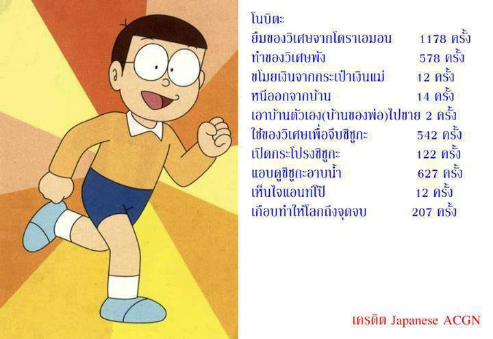
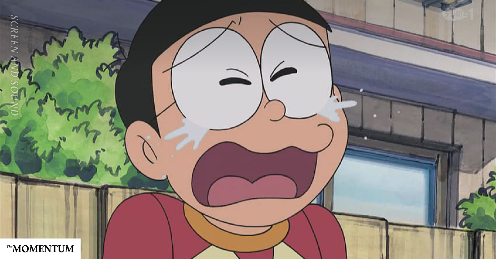

“อย่างเราเรียกว่า โง่ หรือ ฉลาด?” เจอคำถามนี้ ส่วนน้อยที่จะตอบไปทันทีว่าเรา โง่ หรือ ฉลาด ส่วนมากหากใช้เวลาคิดเสียหน่อยคงได้คำตอบทำนองว่า “โง่บางครั้ง ฉลาดบางเรื่อง” ซึ่งในเรื่องที่ฉลาดมันก็ดีอยู่แล้ว ส่วนอีกด้านก็บ่งบอกว่าเราทุกคนย่อมต้อง เป็นคนโง่ อยู่ด้วย เพียงแต่… เราโง่แค่ไหนกัน?
คำว่า “โง่” เราอาจมีเจตคติ ต่างกัน บ้างมองเป็นคำเหยียด หยาบคาย ดูแคลน โดยอาจขึ้นอยู่กับน้ำเสียง และบริบทที่ต่างกันไป แต่ส่วนตัวแล้วไม่ขัดเขินที่จะใช้พูดถึงตัวเองในหลาย ๆ สถานการณ์ว่า “ผมโง่เรื่องนี้” โดยเข้าใจอยู่ด้วยว่าหากพูดถึงตัวเองคงไม่เป็นไร แต่ถ้าไปพูดถึงคนอื่นว่าโง่นั้น อาจดูรุนแรง และไม่จำเป็น ส่วนหนึ่งเพราะเราตีความคำว่าโง่ “ในระดับที่ไม่เท่ากัน”
อันที่จริงก็ไม่มีความจำเป็นที่จะต้องพูดถึงตัวเองว่า “เป็นคนโง่” ไม่ว่าจะโง่มากหรือโง่น้อยก็ตาม เพียงแต่นั่นเป็นเรื่องของการสื่อสารและการแสดงออก แต่ความเข้าใจกับการยอมรับนั้น ถือว่าจำเป็น ที่ควรรู้ตัวว่าเราโง่เรื่องไหนมากแค่ไหน เพราะมีผลต่อการพัฒนาตัวเอง ทัศนคติ รวมถึงดึงสติในการดำเนินชีวิตอีกด้วย จึงอยากให้ลองคิดตามดูว่าโง่ที่มีระดับนั้น เราอยู่ระดับไหนกัน…
โง่ระดับ 1 “แค่ ไม่รู้”
เป็นความโง่ที่เราทุกคนเคยเป็น และส่วนใหญ่จะกล้ายอมรับในทันที แต่มีไม่น้อยที่ยึดติดเพียงบางอย่าง มีอาการคล้ายรังเกียจความโง่ระดับนี้ ทั้งที่มันไม่น่าเสียหายอะไร แต่เมื่อไม่ยอมรับ มันก็มีโอกาสที่จะสร้างผลเสียต่อไปในอนาคต ดังเช่น…
“รู้ใน(ไป)ทุกเรื่อง” ประโยคนี้เป็นคำชม หรือ ประชด? เชื่อว่าส่วนใหญ่ได้ยินแล้วจะฟังเป็นประชดเสียมากกว่า ต่อให้เป็นประโยคที่ตั้งใจชมจริง ๆ เมื่อไปชมใคร เชื่อว่าผู้ถูกชม ถูกยกย่องเช่นนี้ได้ เขาย่อมตอบกลับว่า “ไม่ทุกเรื่องหรอก…” อย่างแน่นอน
ความโง่ไม่เลวร้าย เท่าการไม่ยอมรับ
ด้วยจักรวาลนี้มีข้อมูลมหาศาล เราเองก็มีประสบการณ์เพียงเศษเสี้ยวของข้อมูลเหล่านั้น ดังนั้นเป็นเรื่องธรรมดาที่เราจะ โง่แบบไม่รู้ รวมถึง รู้ไม่หมด กันเป็นปกติ เพราะมีข้อมูลมากมาย มีมิติมากมาย รวมถึงข้อมูลที่ผิดเพี้ยน บิดเบือนง่าย ก็อีกมากมาย
อย่างไรก็ตามนี่ควรถือว่านี่เป็นความโง่ที่น้อยสุด เป็นพื้นฐานที่น่าจะยอมรับได้ แต่หากไม่รับมันกลับส่งผลเสียไม่น้อยกว่าระดับอื่นเลย เพราะจะหมายถึงการสะสมอีกหนึ่งความโง่ไปตลอดกาล
จริงอยู่ที่เราจะไม่เรียกภาวะนี้ว่าโง่ หรือถือว่าแค่ “ไม่รู้” หากภายในใจเรายอมรับ เราย่อมเปิดใจกลับไปหาคำตอบ หาความรู้ในความไม่รู้นั้นให้ตัวเองได้ภายหลัง กล่าวง่าย ๆ ความโง่ระดับนี้ไม่ได้เลวร้ายเท่าการไม่ยอมรับนั่นเอง
โง่ระดับ 2 “รู้แต่ไม่ใช้”
นี่ก็เป็นความโง่หนึ่งที่เราเป็นกันบ่อย แต่ยอมรับได้น้อยกว่า หรือถึงเวลานั้นมันยากที่จะระลึกได้ พื้นฐานที่สุดอาจเกิดจากพฤติกรรม หรือนิสัยความเคยชิน เช่น แทนที่จะใช้คีย์ลัดบนคอมพิวเตอร์เพื่อให้เราสะดวกขึ้น หรือเทคนิคบางอย่างที่เรียนรู้มาแล้ว แต่เราก็เลือกใช้วิธีเดิมที่ช้ากว่า เสียเวลากว่า เพียงเพราะ เคยชินกว่า หรือว่า มันชินไปแล้ว
นั่นเป็นเพียงตัวอย่างพื้นฐาน ซึ่งอาจมองได้ว่าแค่นี้ไม่น่าเรียกว่าโง่ หรือบางเรื่องแค่ลืม ก็ไม่ผิดอะไร แต่เมื่อลืมบ่อย ๆ ติดกับพฤติกรรมเดิม ๆ เมื่อนั้นมันย่อมขัดขวางการพัฒนา เราจะเสียเวลาสะสมไปเรื่อย ๆ จุดหนึ่งก็ถือว่าเสียเวลาชีวิตมากมาย ทั้งที่ที่จริงเรารู้ แต่ไม่เคยนำมาใช้ หรือถ้าเรานึกได้ ณ เหตุการณ์หนึ่งซึ่งมันเริ่มส่งผลเสียขึ้นมา เราก็จะบ่นกับตัวเองได้แค่ว่า “เรานี่โง่จริง ๆ”
อนึ่งหากอะไรทำนองนี้เป็นสิ่งที่เกิดขึ้นบนพฤติกรรมคนอื่น กล่าวคือ เขาทำอะไรเดิม ๆ แทนที่จะใช้วิธี หรือเครื่องมือที่ดีกว่านั้น ซึ่งเขาก็เคยรู้แล้ว เราจะมองว่า ทำไมโง่ ไม่ทำแบบใหม่ วิธีใหม่กันนะ ตอนนั้นล่ะ เราจะมองมันว่าเป็นความโง่ได้ง่ายกว่ามองตัวเอง
แต่ในกรณีที่ละเอียดขึ้น ก็ดังเช่น มีคนมาบอกว่า “ยืมเงิน พรุ่งนี้คืน” หรืออีก 2-3 วันคืน จะด้วยความสงสาร ความไว้ใจ หรืออื่นใดบดบัง ที่หากได้พิจารณา “เรารู้” ได้ว่า ถ้าพรุ่งนี้หรือไม่กี่วันจะหาเงินมาคืนได้ ทำไมวันนี้ต้องยืม? ก็ไม่ได้บอกว่าเป็นไปไม่ได้ที่ต้องยืม แต่จะมีสักกี่เรื่องกันที่จะคอขาดบาดตายขนาดที่ไม่จ่ายวันนี้ เดี๋ยวนี้ หรือต้องด่วนขนาดนั้นจนรอเงินไม่ได้ แน่นอนว่าไม่ใช่ทุกกรณี ได้คืนก็ดีไป แต่ถ้าไม่ได้คืน คนยืมกับคนให้ยืม ใครฉลาดหรือโง่กว่ากัน?
หลายครั้งเราติดกับดักไปในภาวะที่เรียกว่า “อดไม่ได้” คือ รู้ว่าหากทำสิ่งนี้ อาจเกิดสิ่งหนึ่งที่ไม่ดี หากเลือกแบบนี้จะมีอะไรไม่ดีตามมา แต่เราก็ยังเลือกทำทั้งที่รู้ เพียงแต่ ณ จุดนั้นเราแค่หลอกตัวเองด้วยความหวังว่า สิ่งที่ไม่ดีจะไม่มีทางเกิดขึ้น เรื่องทำนองนี้มีมากและหลากหลายตามแต่ละคน ถึงเราไม่คิดว่ามันเป็นความโง่ แต่ภาวะนั้น มันก็ไม่ถือว่าฉลาดเอาเสียเลย
ความโง่ระดับนี้ เรียกได้ว่าเกิดจาก ความหลงลืม ไม่รอบคอบ ขาดสติ ที่จริงก็เป็นความโง่ที่ให้อภัย(ตัวเอง)ได้ แต่บางทีถ้ามันบ่อยเกินไป รู้แต่ไม่เคยนำมาใช้ รู้แต่ไม่ทำ หรือรู้แต่ยังทำ ก็คงบอกตัวเองได้เช่นกันว่า “โง่มากไปแล้ว”

โง่ระดับ 3 “งมงาย”
เคยกล่าวหลายครั้งว่า “ความเชื่อ เป็นเรื่องที่น่ากลัว” ซึ่งในมุมหนึ่งการไม่มีความเชื่อเลยก็น่ากลัว เพราะมันไม่มีทางผลักดันให้ไปทำในสิ่งที่ดี สิ่งที่ควรสำเร็จ เช่นกัน หากสรุปแล้ว ความเชื่อ เป็นเหมือนดาบสองคม(ที่คมมาก) ขึ้นอยู่กับจะถูกใช้ไปในด้านใด
ทำไมมันโง่ได้ขนาดนั้น?
เมื่อความเข้าใจผิด ความรู้น้อย หรือความเชื่อใดก็ตามที่ส่งผลไม่ดีต่อใครคนหนึ่งจนถลำลึก ขนาดคนรอบข้างตำหนิ หรือสงสัยว่า “ทำไมมันโง่ได้ขนาดนั้น?” เวลาเช่นนี้ บางทีคำว่า “โง่” ดูรุนแรงไปเลย ถ้ามองในด้านที่ว่า เขาแค่ “หลงเชื่อ” ไปแล้ว และไม่ว่าจะเป็นเรื่องใด ส่วนใหญ่เจ้าตัวก็พอ “รู้” ไม่ใช่ไม่รู้ถึงข้อเสียที่เกิดขึ้น เพียงแต่ปัจจัยสำคัญที่ทำให้ความเชื่อนั้นอยู่ในระดับงมงายนั่นเพียงเพราะ “ความหวัง” ในด้านดี ที่ยังมีอยู่ และเชื่อว่าเราต่างเคยเป็น
จนจุดหนึ่งเมื่อความสูญเสียเกิดขึ้นมากจนเกินทนรับ หรือหมดความหวังต่อสิ่งที่เชื่อนั้นเมื่อใด เราจึงก้าวพ้นความโง่นั้นได้ หรือที่เรียกว่า “หูตาสว่าง” ขึ้นแล้วนั่นเอง ซึ่งมันก็ขึ้นอยู่กับว่า พร้อมจะเสียแค่ไหน หรือมีความหวังมากเท่าใด มันก็เป็นเครื่องซื้อเวลาให้เชื่อในสิ่งนั้นได้นานยิ่งขึ้น
แม้มันจะเป็นเพียงความเชื่อที่ผิด, การขาดที่พึ่ง, หมดหวังจากสิ่งหนึ่ง, ความอ่อนแอของใจ หรือปัจจัยใด ๆ ก็ตามที่วันนี้อาจไม่รู้ตัว สุดท้ายปฏิเสธไม่ได้ว่า ณ เวลานั้น เรากำลัง “โง่ งมงาย” และผลเสียก็มักใหญ่ไปตามความคาดหวัง ได้ขนาดที่บางคนทุ่มทั้งชีวิตไป ให้กับความหวังนั้น
โง่ระดับ 4 “ไม่โง่!”
ความโง่ ระดับ 1-2 ถ้าเปิดใจก็เป็นเพียงความโง่ที่ธรรมดา เพราะคนเรายังต้องเรียนรู้ หรือหลงลืม ขาดสติกันไปบ้าง แม้แต่ระดับ 3 โง่งมงาย มุมหนึ่ง มันก็เป็นเรื่องที่น่าเห็นใจ เชื่อไปแล้ว มีความหวังไปแล้ว เพียงแต่ตราบใดที่ผลเสียยังไม่มา หรือศรัทธายังไม่หมดไป อาจเป็นสุขดีอยู่จึงยากจะเปลี่ยนแปลง แต่วันหนึ่งก็ต้องหมดเวลาของมัน หากสิ่งนั้นเป็นเพียงความงมงาย
แต่ระดับที่ร้ายที่สุดก็คงหนีไม่พ้น ระดับที่ไม่ว่าจะเกิดอะไรก็ไม่ยอมรับ ไม่เรียนรู้ ไม่ว่าผลลัพธ์นั้นจะเป็นอย่างไร ก็.. คิดว่าตนนั้น “ไม่โง่”
โดยการคิดว่าไม่โง่นี้ เป็นภาวะที่เกิดขึ้นซ้ำจากความโง่ระดับอื่น เช่น เมื่ออยู่ในระดับ “ไม่รู้” พอมีคนมาให้ความรู้ ก็ต่อต้าน ไม่รับ ไม่เปิดใจ หรือ ในความโง่ที่ผิดพลาดไปแล้ว ขาดสติไปแล้วก็ไม่ยอมรับ คิดว่าสิ่งที่ทำแม้ขาดสตินั้นก็เป็นเรื่องที่ถูกต้อง และแน่นอนในอีกระดับที่ใครจะว่างมงายอย่างไร ก็ถือว่าเป็นเพียงความคิดคนอื่น ความเชื่อคนอื่น ต่อให้มีความจริงปรากฏ ส่งผลเสีย ผลร้ายอย่างไร ก็ไม่อาจเปลี่ยนแปลงความคิดความเชื่อตนได้ “ฉันจะเป็นของฉันแบบนี้”
ความโง่ระดับนี้ ส่วนใหญ่เราอาจเคยประสบจากใครบางคน ซึ่งเมื่อพบว่าเขาไม่คิดว่าตนนั้นโง่ สิ่งที่ทำได้คือการถอยห่างเพียงอย่างเดียว เพราะหากลองหรือพยายามจะเปลี่ยนเขาเท่าใด เราก็จะเป็นฝ่ายที่เสียไปด้วย โดยอย่างแรกสุด คือ เสียเวลา…
แม้แต่เราเองก็มีโอกาสหลงคิดว่าเรา “ไม่โง่” ได้ ถ้ายังพอมีสติก็ดูไม่ยากว่า ทำไมใคร ๆ ไม่ช่วยเหลือ ใคร ๆ ต่างหนีห่าง อาจเหลือเพียงบางคนที่ยัง “งมงาย” กับเรา นั่นเพราะเขามีความหวังกับเรา (โง่ระดับ 3 อาจอยู่กับระดับ 4 ได้ 🤔) แต่อย่าคิดว่ามันจะถาวร หรือความหวังไม่หมดไปหากยังคิดไม่ได้ว่า ทำไมคนส่วนใหญ่จึงหายไป?… ก็เพราะเราเป็นเสียอย่างนี้ไง…
ในด้านหนึ่ง คนที่คิดว่าตนไม่โง่(เลย) มีแนวโน้มจะคิดว่าคนอื่นโง่ไม่ได้เช่นกัน ดังนั้นเมื่อผู้อื่น ไม่รู้ หลงลืม หรือผิดพลาดในเรื่องใด ท่าทีไม่พอใจ รังเกียจ ไม่ยอมรับ ไม่ให้อภัย ก็แสดงจากเขาได้ง่าย เพราะอยู่ในมุมมองที่ใคร ๆ ก็ “โง่ไม่ได้” (น่ากลัวจริง ๆ 😱)

เป็นคนโง่ที่มีระดับ
“โง่” เป็นเพียงถ้อยคำ อาจดูรุนแรงหากกล่าวแบบเหมารวม แต่สำหรับ “ไม่รู้, หลงลืม, เข้าใจผิด, คาดหวัง, ยึดติด” สิ่งเหล่านี้เป็นปัจจัยให้โง่ในระดับที่แตกต่างกัน และเราอาจเลือกใช้คำเหล่านี้แทน เพียงแต่หากอ่านมาถึงตรงนี้ ในคนที่ยอมรับง่าย ๆ ว่า เคยโง่ และยังต้องโง่ อาจไม่โง่ในสายตาคนอื่น ๆ แต่คนที่ไม่คิดหรือยอมรับว่าเราโง่ อาจโง่มากในสายตนคนอื่นได้เช่นกัน
และหากพอเห็นพ้องหรือเข้าใจในระดับความโง่นี้แล้ว อาจมองเห็นได้ด้วยว่า ความโง่หากสะสมไว้มันมีแนวโน้มพัฒนาไปเป็นระดับ ๆ ได้ จาก ไม่รู้ สู่ขาดสติ สู่งมงาย ไปจน ฝังใจ ไม่เชื่ออะไรเลยนอกจากตัวเอง (อัตตาเหลือคณานับ)
เมื่ออย่างไรเสีย คนเราก็ย่อมโง่กันบ้าง ก็ควรรักษาระดับความโง่ไว้ รวมถึงลดระดับความโง่ลงด้วย ตั้งแต่หูตาสว่างมากขึ้น, มีสติมากขึ้น, ไม่รู้ให้น้อยลง เหล่านี้คงช่วยให้เรา “เป็นคนโง่ที่มีระดับต้น” และ ระดับน้อยลง หรือระดับที่มันไม่ทำให้เสียหายอะไร แต่หากเมื่อใดหลงลืม ยึดติด เต็มแก้วมากขึ้นเท่าใด เมื่อนั้น แทนที่จะรักษาระดับไว้ มันอาจเพิ่มระดับขึ้นไปไม่รู้ตัว..
บทความฉบับปรับปรุง เผยแพร่ครั้งแรก Facebook Sirichaiwatt เมื่อ 08/02/2022
ย้อนกลับ